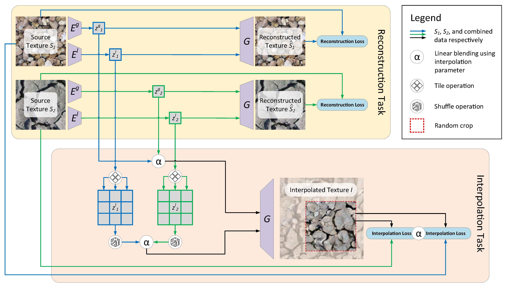
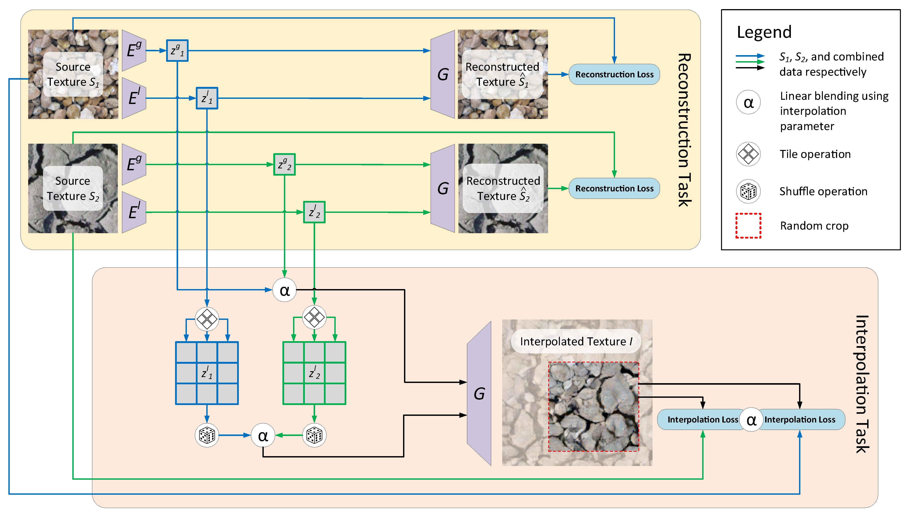

Texture Mixer: A Network for Controllable Synthesis and Interpolation of Texture
CVPR 2019
1. University of Maryland
2. Max Planck Institute for Informatics
3. Adobe Research
4. University of Virginia
 
Abstract
This paper addresses the problem of interpolating visual textures. We formulate this problem by requiring (1) by-example controllability and (2) realistic and smooth interpolation among an arbitrary number of texture samples. To solve it we propose a neural network trained simultaneously on a reconstruction task and a generation task, which can project texture examples onto a latent space where they can be linearly interpolated and projected back onto the image domain, thus ensuring both intuitive control and realistic results. We show our method outperforms a number of baselines according to a comprehensive suite of metrics as well as a user study. We further show several applications based on our technique, which include texture brush, texture dissolve, and animal hybridization.
Demos
Texture Interpolation 128x1024
Texture Dissolve 1024x1024


Texture Brush 512x2048


Animal hybridization

Code
Dataset
Earth texture dataset
Press coverage
QbitAI Academia News
Citation
@inproceedings{yu2019texture,
author = {Yu, Ning and Barnes, Connelly and Shechtman, Eli and Amirghodsi, Sohrab and Luk\'{a}\v{c}, Michal},
title = {Texture Mixer: A Network for Controllable Synthesis and Interpolation of Texture},
booktitle = {IEEE Conference on Computer Vision and Pattern Recognition (CVPR)},
year = {2019}
}
Acknowledgement
This research was supported by Adobe Research Funding. We thank to the Flickr photographers for licensing photos under Creative Commons or public domain.